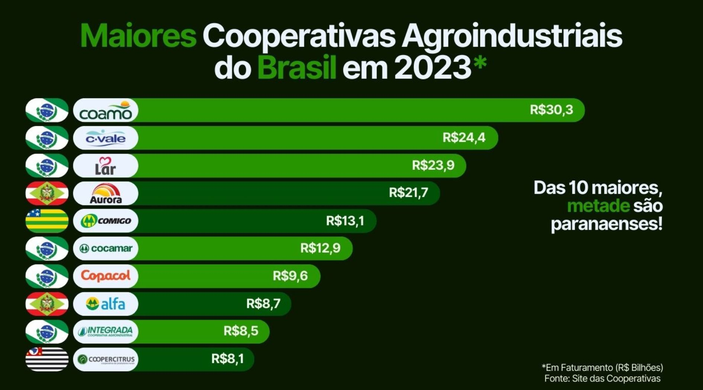

Aqui, nós, os paranaenses, realmente devemos comemorar! O que é o cooperativismo? O cooperativismo é a união de pessoas com interesses em comum e que se baseiam na filosofia da colaboração, parceria e a cooperação para a construção de uma sociedade mais justa e próspera para todos. Nesse sistema, as pessoas são mais do que indivíduos, eles são sócios e participantes ativos da cooperativa. Cooperativismo no Paraná: O cooperativismo no Paraná tem as suas origens centenárias com os imigrantes europeus que vieram em busca de melhores condições na região. E quem planta, colhe: hoje em dia, as cooperativas paranaenses são as maiores do país e representam mais de 199 mil cooperados e mais de 100 mil empregados, que juntos geraram R$ 162 bilhões de faturamento e representam mais de 60% da produção de todo o Paraná.
Fontes e Referencias:
Cooperativismo no Paraná. Secretária de Agricultura do Paraná.
Cooperativismo: o que é, objetivos, importância e mais. Sicredi.
Agrofloresta
Cooperativismo
Agricultura Urbana e Vertical
Projeto Agrinho
Sistema FAEP
GitHub
Programação
Arquivos de Mídia